UI/UX Design: For the Chores Nobody Sees
A calm home for invisible work

Somebody in every home keeps the list. They notice the filter is due, remember the plants, decide the fridge can’t wait: noticing, planning, remembering. Research calls it cognitive household labor. It lands on one person by default.
And yet, your neighbors know you as house number No.x. You arrive at a double date as a pair. You are somebody’s parent or the pet’s pawrent. Part of the time the world counts you as a team, and what keeps that team standing is exactly the work nobody sees. Nisse is a home management app built to share it: to notice, plan, and remember together, and to appreciate the invisible work the other one is carrying.
How do you make invisible work visible,
without turning a relationship into a scoreboard?
What existing tools get wrong
I mapped twenty products across seven kinds of tool, all built for adults sharing a home, against the two questions that decide everything: who does the noticing, and when ownership gets fixed. Four patterns fall out.
There is always an admin

There is always an admin
Nearly every tool models a household as one owner handing work down. Whoever sets it up becomes the manager, again, and the software quietly hands them the clipboard.
We think a home has no admin. The account is the household itself, not a person with a list.
Ownership gets fixed too early

Ownership gets fixed too early
One partner notices, decides it matters, then passes over the doing. A field for names turns that into a feature and calls it teamwork. The noticing never moves.
We think nothing should carry a name until someone picks it up. Ownership is claimed at the moment of doing, not assigned at the moment of creation.
Pressure stands in for care

Pressure stands in for care
Cleaning the windows is not due Tuesday at 9:00, it is due roughly this month. Hard dates invent failure in a home that is fine, and points and leaderboards turn care into currency and partners into rivals.
We think work has rhythm, not deadlines, and that fairness is a mirror rather than a scoreboard. Something to look at together, never something to win.
A smarter manager is still a manager

A smarter manager is still a manager
The best-funded answer is to let an assistant do the noticing. But an assistant has to hand the work to somebody, so it assigns. Your partner ends up holding a notification, not a model of the home.
We think the goal was never to delete the noticing. It was to let two people share it.
One of these apps has a glowing review that captures the problem exactly: “Nice to be able to assign tasks to my husband and get them off my mental load.”
A real win, and still not the goal. It was her who noticed, decided, and chose who would do it. The management stayed with her.
Nisse pushes further: a home where the noticing is shared from the start, so nobody keeps the list, and nobody gets handed one.
a person does the noticing · ownership at pickup
- Skylight
- Homsy
- Cozi
- Cupla
- Todoist / Reminders
- SameWave
the system does the noticing · ownership at pickup
- Nisse
- Tody
- Sweepy
- Don’t Forget Me
a person does the noticing · ownership fixed at creation
- Yohana (closed 2025)
- RemindHer
- ChoreBuster
- Plastnofy
- Chap
- Flatastic
- Nipto
the system does the noticing · ownership fixed at creation
- Maple
- Ohai
- Milo
keeps scoreno scoreNisse
The core concept: a shared pool, in soft time
In Nisse, tasks don’t belong to anyone when they’re created. They sit in a shared household pool, visible to both partners, and are claimed when taken on, not assigned at creation. That one structural choice removes the delegation dynamic entirely. Nobody hands out work, nobody nags. The question shifts from “did you do what I asked” to “what does our home need, and what will I pick up.”
Recurring chores carry a rhythm instead of a deadline. Most chores don’t really have a due date; nobody needs the windows washed by the 14th, you just need to remember they exist and not let them slide forever. This is where most apps fail: the moment they remind you, you’re already overdue, and the reminder itself tells you that you failed. Nisse gives each chore a window instead. Inside it, the task floats freely and its state warms gently as the window ripens. Only a genuinely broken rhythm turns red, never the passing of a Tuesday.
Nisse learns how you actually live: if the plants get watered every ten days instead of seven, the window stretches to match, rather than holding you to a schedule you invented once and never meant literally. When life demands a real date, any floating task can be fixed to the calendar. Guests arrive Saturday, so the big cleaning gets settled.
Once a month, Nisse offers a gentle retrospective of how the household’s work actually distributed itself. A conversation starter for two adults, never a verdict. The mirror shows; it doesn’t judge.
-
Born ownerless
Created straight into the shared pool. No name attached, no avatar.
-
Floating in its window
Lives in a rhythm, not a deadline. Ripens gently as the window closes.
-
Claimed
Takes a partner’s color at the moment of pickup — not at creation.
-
Promoted, if life demands
“Guests on Saturday” — a floating chore settles onto a real date. Optional, reversible.
-
Reflected in the mirror
Becomes proportion in the monthly recap — never points.
The palette
The colors had a narrow brief: calm, but warm. Nothing that reads as office software, nothing that shouts either — no candy brights, no gamified cheer, but no gravity. Muted, dusty tones landed in that gap: soft enough to live on a home screen all day, warm enough that the app feels like it likes you.
The Information Architecture
Nisse is deliberately small: seven sections, and only three of them are tabs. Home is the space lens — what does our home need. Calendar is the time lens — what does this week look like. Grocery is the errand lens — what do we pick up while we’re out. Everything else hangs off those three: a + layer for capture, the household view behind the two partner chips, and settings behind the header, where Nisse mostly learns how softly to speak.
The board counts 61 screens, sheets and states, but the shape matters more than the number. Depth flows top to bottom, and it runs out fast — almost nothing is more than two taps from a tab, and most surfaces aren’t destinations at all but sheets that slide up, do one thing, and leave. The heaviest column is Home, which is the point: the space lens carries the product, from the pulse down through a zone to a single chore and its plan.
The dashed row at the bottom is my favorite part of the board. One screen, many doors: the same chore detail opens from the pulse, from its zone, from the calendar, and from planning. A ✓ on a to-attend lands it on the calendar; a ✓ on a to-buy lands it in its grocery pile; tapping a partner chip opens the household trail already filtered to them. The sections stay separate on the map and porous in the hand — which is roughly how a home works too.

The screens
Below is the app as it stands — every screen, grouped the way you’d actually move through them. All of it runs; nothing here is a mockup of a mockup.
Home — the space lens
The default answer to “how is our home doing.” The zone blobs float free, each sized by its open work. Press and hold anywhere for a quiet read — the roll of things that need you, and the roll of thanks. The same home flips into a list for the days you’d rather scan than feel.
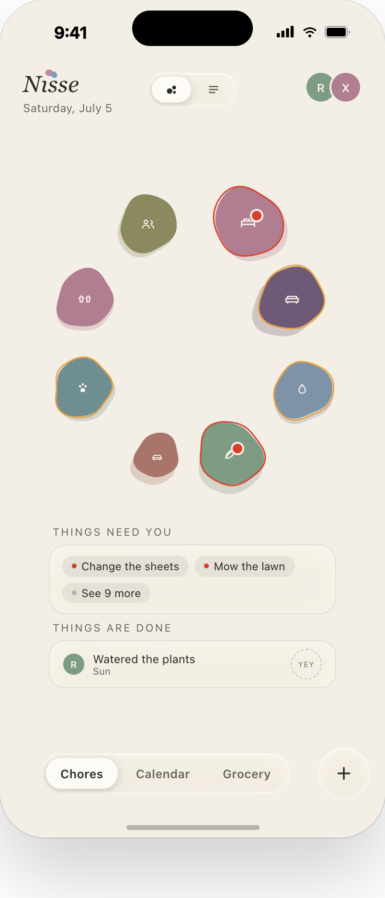
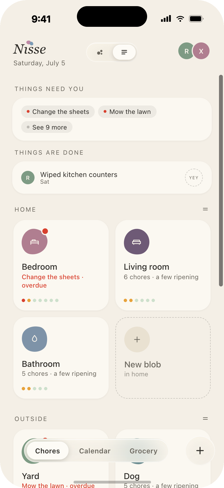

Into the work — zone and chore
Tap a blob and you’re inside one area of the home: its chores, their rhythms, their state dots. Tap a chore and you get the whole philosophy on one screen — a rhythm card instead of a due date, a usual window instead of an alarm, and a plan screen for when life wants a real day.
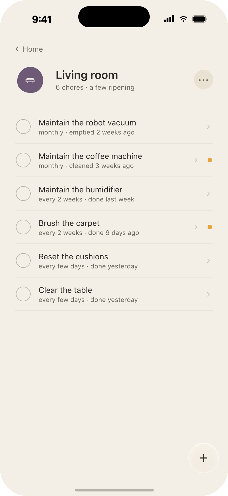
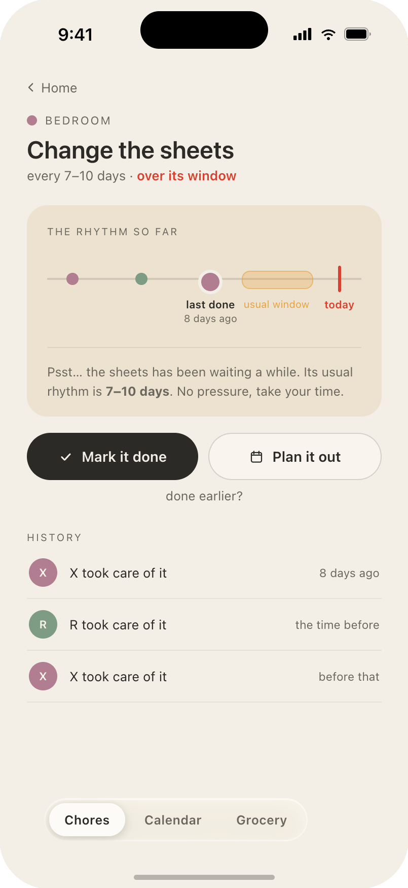
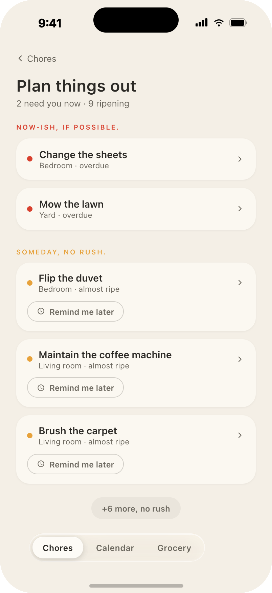
Calendar — the time lens
The week as the household actually experiences it: events, busy blocks, and chores that have earned a date. Unplanned chores wait in a tray at the edge — drag one onto a day to plan it, drag it onto a yesterday to log that it already happened. Both partners’ calendars share the strip.
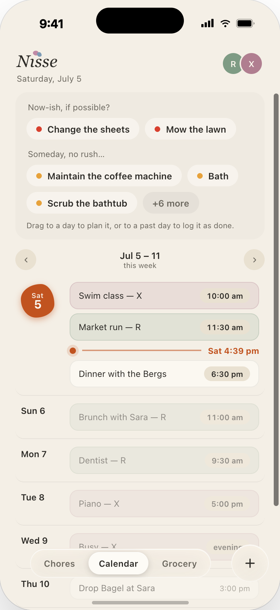
Capture — the + layer
One + button, three sheets, and the only typing Nisse ever really asks for. A to-do picks a zone and a rhythm and is born ownerless. A to-attend takes a date and lands on the calendar. A to-buy names an item and lands in its pile. Each sheet is built to be closed within seconds.
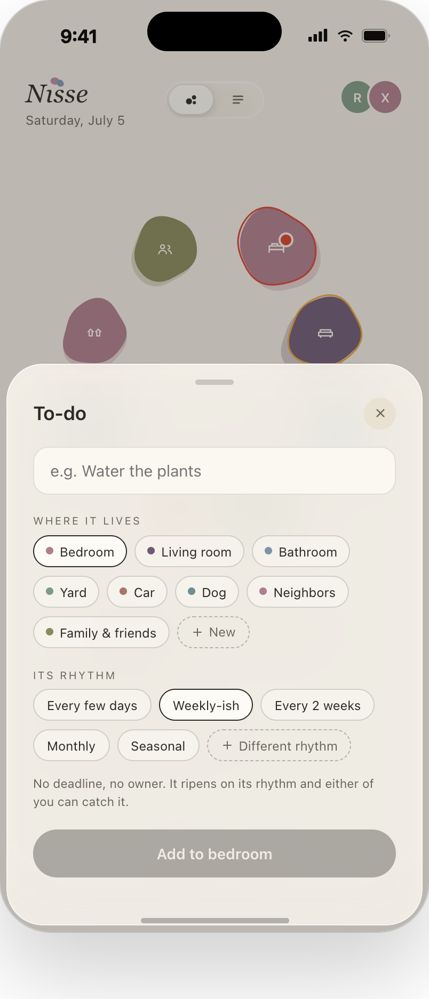
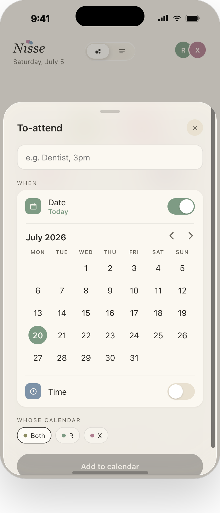
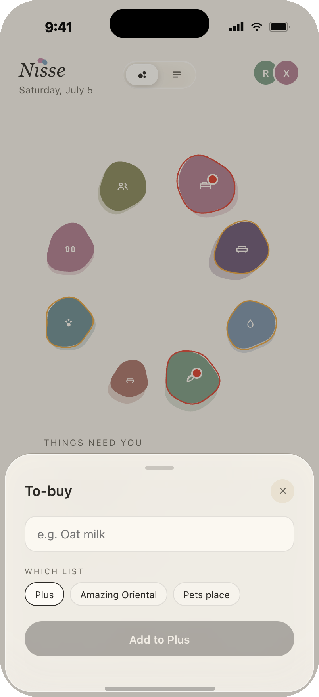
Grocery — the errand lens
The third tab is the humblest: piles, one per shop or need. Check things off in the aisle, clear the done ones, make a new pile when a trip becomes a habit.
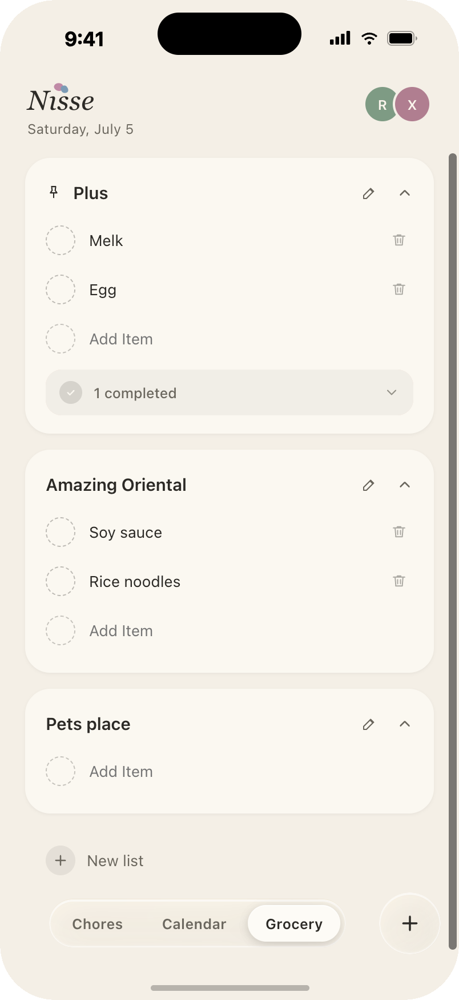
The two of you — household & recap
Behind the two partner chips lives the only place Nisse talks about people instead of chores. The trail shows who did what, lately — filterable, never ranked. A small thanks costs two taps. And once a month, the recap: how the work actually distributed itself, told per person as a story, never as a score.
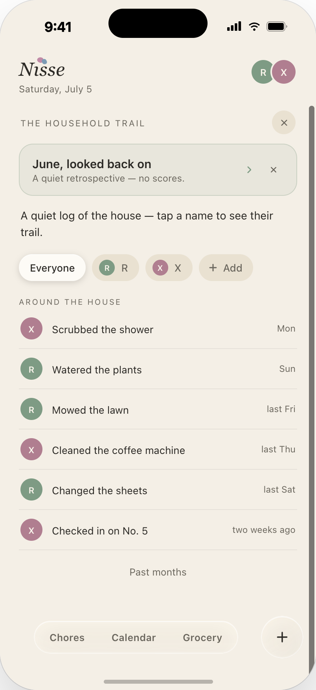
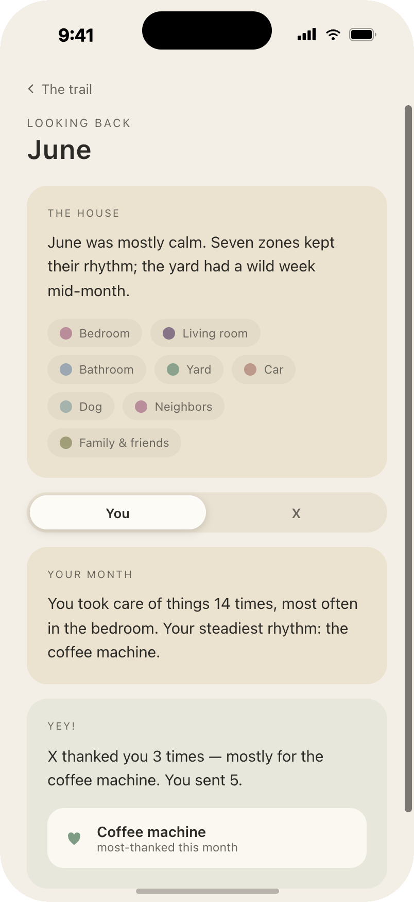
The quiet parts — settings & safety nets
Settings mostly govern how softly Nisse speaks: quiet, a daily murmur, or only-when-red; quiet hours; the theme follows the OS. And because a shared home needs forgiveness more than most apps do, recently deleted keeps every removed zone restorable — nothing a tired thumb does at midnight is permanent.
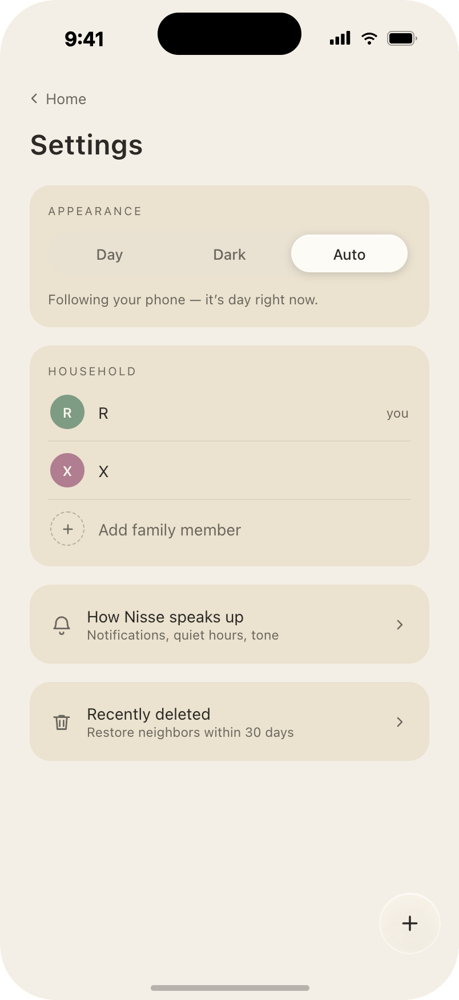
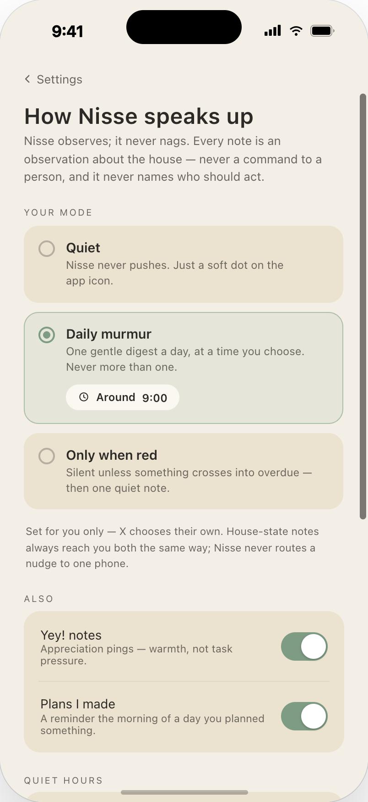
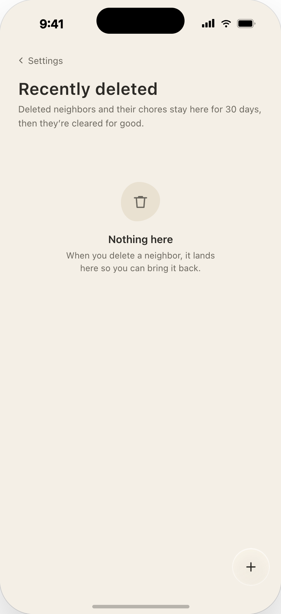
Before pixels
Every screen above was settled in wireframe first — round-two frames, drawn to pin down behavior while the visuals were still cheap to throw away. The full board is here for anyone who likes reading a product in grayscale: click to open, click again to step in close.
What didn’t make it
The rejected directions defined the product as much as the accepted ones.
Silent windows
Tasks stayed invisible inside their cadence window and only surfaced when attention was needed. It created a purely negative feedback loop — the app only ever spoke to complain. Now status is always visible, and mostly it’s visibly fine.
“Only spoke to complain.”
Arc rings & geometric indicators
Every iteration toward neat, thin, mechanical shapes — progress rings, puzzle layouts — got pulled back. Geometry reads as measurement; measurement reads as judgment. The correct direction, every time, was looser and more pebble-like.
“Geometry reads as judgment.”
External halos for state
State began as a glow around each blob — too loud at pebble scale; the composition started shouting. State moved to a small dot on the blob’s edge: legible up close, silent from afar.
“The composition started shouting.”
The literal home
Realistic room representations made the app feel like a facilities dashboard. Abstract blobs made it feel like a living thing.
“A facilities dashboard, not a living thing.”
Structure is ethics. The most consequential design decision
in Nisse is a missing form field.
Removing “assign to” did more for fairness than any fairness feature could. And restraint, it turns out, has to be designed repeatedly — calm isn’t a default you set once but a choice you re-make at every screen, against every instinct to add a number, a badge, a pulse of motion. Qualitative beats quantitative in emotional territory: a home described as “mostly calm” starts a different conversation than a home scored 73%. And abstraction is honest — blobs don’t pretend to know your house; they only claim to know how much it’s asking of you right now.
The same lessons apply to the way it was built. Working with Claude Code didn’t lower the bar for design judgment — it raised the price of not having any. Next: treatment explorations of the pulse pebble, a full prototype of the claim-and-promote gestures, and living with the fairness mirror through a real monthly cycle with real couples — because a mirror can only be judged after a household has actually looked into it.
If this made you think about the invisible work in your own home — that’s the point.